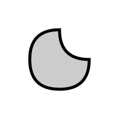

Page 17: Béziers in APIs
Both Canvas and SVG support Bézier curves. Both APIs provide commands for both cubic and quadratic Béziers. Technically, they support linear Béziers, but we usually call these lines.
Bézier Curves in Canvas
The HTML Canvas API provides both quadratic and cubic Bézier curves. It allows you to use these curves as pieces of longer paths.
One slightly surprising thing about Bézier segments in Canvas is that they take one fewer control point as an argument than the curve requires. The first control point is always the most recent pen position. So, if you want to specify the four points of a Bézier segment, you need to do a moveTo first to establish that initial point:
|
|
This is convenient because we often want to connect segments. The end of the last segment becomes the beginning of the next. continuity is easy. If you want or continuity, you need to choose the position of the point (bx,by) appropriately.
Bézier Curves in SVG
SVG supports Bézier curves as part of its “path language”. When you make a path, you can include commands to add quadratic and cubic Bézier segments.
Here is an example of a path created in SVG. The file is quadratic.svg
{kind=link}
1<svg xmlns="http://www.w3.org/2000/svg" width="200px" height="200px">
2 <path
3 stroke="black"
4 fill ="#CCC"
5 stroke-width="5"
6 d="M150,100
7 Q 150,150 100,150
8 Q 50,150 50,100
9 Q 50, 50 100, 50
10 Q 100,100 150,100
11 z"
12 />
13</svg>
14

Notice that the shape is a single path, made up of 4 quadratic Bézier segments. The path description is in a string, broken up over lines 6-12. You can see it starts with a move to (M) command (line 6), and then the 4 quadraticBezierCurveTo commands (Q). It also has a “close path” (Z) command at the end.
Notice that the quadratic Bézier commands take two points as parameters. Like the Canvas commands, the first point is the current pen position. The first curve starts at the move to position. The others connect to the ends of the previous segments, so they have continuity. Because of the positions of the control points, most connections are (except for the ones that obviously aren’t).
Practice: To practice reading SVG and writing Canvas Bézier curves, I would like you to reproduce the picture above (in quadratic.svg ) using the Canvas API in the files 03-17-01.js .
But, to make this more interesting: you are not allowed to use the quadraticBezierTo command in your JavaScript program; you must use the bezierCurveTo function (which is cubic). You will need to convert the quadratic (3 point) curves to cubic (4 point) curves. In general, converting Bézier curves between degrees is tricky, but for the special case of 2 to 3, it is easy. A hint: figure out the tangent vectors for the quadratic, and use them to determine the control points of the cubic. The end points are easy.
view - look at the box and experiment with it
examine - look at the code for the box
edit - change the box's content
rubric - several steps are suggested in the rubric page - form elements on page in rubric
03-17-01.html 03-17-01.js
| Kind
Kind of rubric items: standard - expected from all students advanced - used to get a better grade creative - an opportunity to do something creative optional - not required, but encouraged |
Description | |
| standard | recreated the picture using Canvas | |
| standard | didn't use quadratic commands but got the correct shape using cubics |
Your turn: A Picture
In this box, you can practice using the canvas Bézier drawing commands. The canvas context has functions that put Bézier segments onto the end of the current path. Just as context.lineTo(x,y) extends the current path with a line segment from the current end of the path to x,y, the context.bezierCurveTo function extends the path with a cubic Bézier segment. The function takes 3 points (the segment uses 4 points as it includes the end of the path before the function is called). Paths with curves can be stroked and filled like any other paths.
Make a picture in the box below using Canvas drawing commands. Your picture must use curves (cubic Bézier curves - with the Canvas bezierCurveTo function). You should edit
03-17-02.js
. Your picture must have shapes that are obviously curves (not straight lines) - it should be clear that they are not circles or arcs.
In at least one place in your picture, you must connect two Bézier segments with or continuity. Describe one or two places where you connected Bézier segments with continuity (tell us where to look; we should see a place with continuity). For example, “at the top of the mountain, two lines come together with continuity” - except that your example must be or .
This must be a static picture. You’ll get to make something animated or interactive later in the workbook.
view - look at the box and experiment with it
examine - look at the code for the box
edit - change the box's content
rubric - several steps are suggested in the rubric page - form elements on page in rubric
03-17-02.html 03-17-02.js
| Kind
Kind of rubric items: standard - expected from all students advanced - used to get a better grade creative - an opportunity to do something creative optional - not required, but encouraged |
Description | |
| standard | draw a picture that demonstrates the use of bezierCurveTo in Canvas | |
| standard | explained where there is G(1) continuity between Bézier segments in box |
Explain your use of continuity:
And after writing that, it might be a good time for checkpointing and writing your JSON file in case something goes astray…
Checkpoint Upload: waiting for check
Summary: Bézier Curves
More details of Bézier curves can be found in the Curves Notes. This is a much more mathematical approach to them. I actually like the approach in the workbook better.
Here, we focused on the specific kinds of Bézier curves we see in Canvas. Cubic Beziers have a connection with Hermite (and therefore Cardinal) cubics and how they are drawn in Canvas.
The list of properties of Bezier curves is important. Here are some key ones:
- Bezier curves can be defined for any number of control points .
- Bezier curves are symmetric. Anything that applies to “first” also applies to “last”.
- Bezier curves interpolate their first point. And, because of symmetry, their last.
- Bezier curves’ tangents are determined by the first (last) two points. The scaling factor is determined by the number of points (n-1).
- Bezier curves stay within the convex hull of their points.
- Bezier curves are variation diminishing.
- Bezier curves are affine invariant.
- Bezier curves for n points can be represented by an n-1 degree polynomial.
The geometric constructions are also valuable, as they lead to algorithms.
On the next page, we’ll briefly consider B-Splines, a different kind of approximating curve.
Next: Page 18 - B-Splines